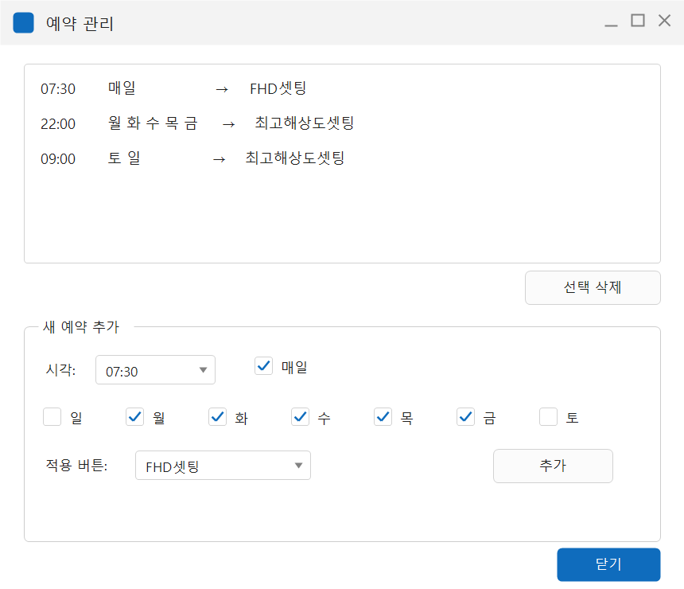
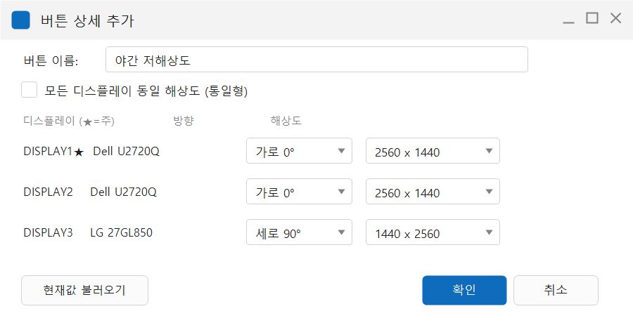

ResSwitch — Display Resolution Changer for Remote Work
ResSwitch — 원격근무용 디스플레이 해상도 전환 유틸리티



An ultra-light Windows utility that fixes the host↔client resolution mismatch on Chrome Remote Desktop with a single button, and auto-switches resolution on a schedule as you move between home and office.
It stores per-monitor resolution, orientation, placement, and primary-monitor assignment as profiles and restores them with one click, and it registers schedules with the Windows Task Scheduler so the resolution switches at the set time even when the app is closed. It ships as a single executable with no installer (one source file, ResChanger.cs) and requires no administrator privileges.
Structure · Design
단일 소스 파일(ResChanger.cs)로 이루어진 .NET Framework WinForms 실행 파일이며, 별도 IDE 없이 Windows에 기본 포함된 컴파일러(csc.exe /target:winexe)로 빌드된다. 기능은 다섯 갈래다. ① 원클릭 전환 — 버튼을 누르면 모든 모니터의 해상도가 즉시 바뀐다. ② 모니터별 개별 프로필 — 화면마다 해상도와 방향(가로/세로 90·180·270°), 배치 위치, 주 모니터 지정까지 저장·복원해 창이 모니터 간 넘어가는 배열까지 그대로 재현한다. ③ 현재 설정 저장 — 지금의 Windows 화면 구성을 그대로 캡처해 버튼으로 만든다. ④ 통일형 모드 — 모든 모니터를 같은 해상도로 맞춰 원격 접속용 단일 해상도를 만든다. ⑤ 예약 자동 전환 — 시각·요일별 자동 적용. 이 밖에 트레이 상주(최소화 시 트레이로, 트레이 메뉴에서 프로필 바로 적용), Windows 시작 시 자동 실행(선택), 요청 해상도가 미지원일 때 가장 가까운 지원 해상도로 대체하는 강제 적용 폴백, 실행·종료·적용·예외를 남기는 로그 기록을 갖췄다. 상태는 실행 파일과 같은 폴더의 텍스트 파일에 저장된다 — buttons.txt(버튼별 모니터 해상도·방향·위치·주모니터), schedules.txt(시·분·요일마스크·버튼이름), settings.txt(트레이 최소화·자동 최소화 옵션), log.txt(512KB 초과 시 log.txt.old로 롤링). 명령줄 옵션은 두 가지로, --apply "버튼이름"은 해당 프로필을 즉시 적용하고 종료하며(예약 스케줄러가 사용), --min은 트레이로 최소화된 상태로 시작한다(자동 실행 시 사용). 동작 요구 사항은 Windows 7·10·11과 Windows에 기본 포함된 .NET Framework 4.x이며 관리자 권한은 필요하지 않다. 라이선스는 MIT.
Design goals
원격 데스크톱은 호스트(작업 PC)의 해상도를 그대로 클라이언트(접속 기기)에 보여준다. 그래서 사무실 데스크톱(예: 듀얼 2560×1440 + 세로 모니터)을 집의 노트북(1920×1080 한 화면)으로 원격 접속하면 화면이 잘리거나 글씨가 지나치게 작아지고 스크롤이 심해지며, 반대로 원격용으로 낮춰 둔 해상도를 사무실에서 그대로 쓰면 작업 공간이 좁아진다. 이 전환을 버튼 하나 또는 예약 한 줄로 끝내는 것이 목표였다 — 집에서 접속할 때는 원격모드 버튼으로 호스트를 접속 기기와 1:1로 맞추고, 사무실로 돌아오면 사무실모드 버튼으로 듀얼·세로 배치를 즉시 복원한다. 출퇴근 시간이 일정하다면 예약으로 자동화한다(예: 평일 09:00 사무실모드 / 19:00 원격모드). 예약이 앱 내부 타이머가 아니라 Windows 작업 스케줄러에 등록되도록 설계한 것이 핵심이다 — 예약 시각이 되면 OS가 직접 ResSwitch.exe --apply "버튼이름"을 실행하므로 앱이 꺼져 있거나 재부팅된 뒤에도(로그인 상태라면) 해상도가 바뀌고, 결과적으로 원격 접속 전에 호스트 해상도가 이미 전환되어 있다. 등록된 작업은 Windows 작업 스케줄러에서 ResChanger_* 이름으로 확인·삭제할 수 있다. 접속하는 기기의 화면 해상도와 동일한 값으로 원격모드를 만들면 스케일링 없이 1:1로 선명하게 보이고 스크롤도 사라진다. 특정 원격 도구에 묶이지 않도록 호스트 해상도 자체를 다루게 해, Chrome Remote Desktop 외에 TeamViewer·AnyDesk·RDP 등에서도 동일하게 쓰인다. 설치 프로그램 없는 단일 실행 파일로 배포한 것도 같은 이유에서다 — 필요한 곳에 파일 하나만 두면 되고 관리자 권한도 필요하지 않다.